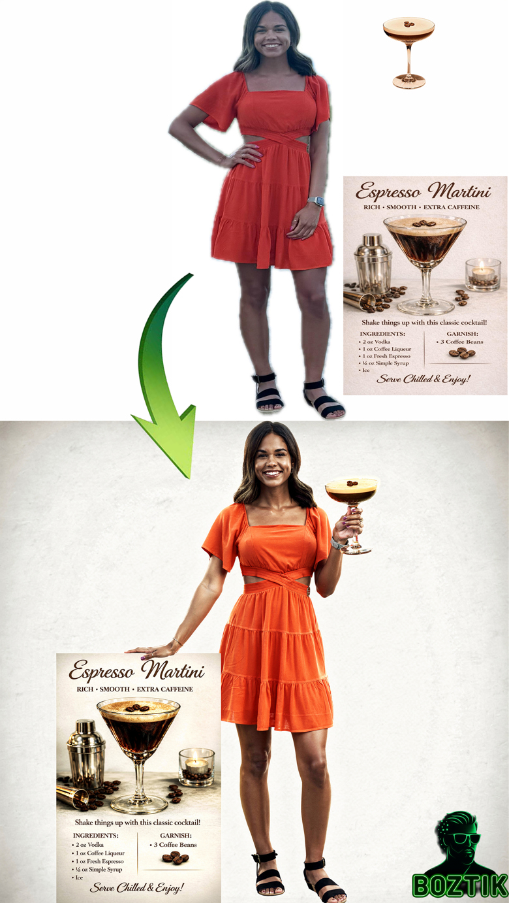
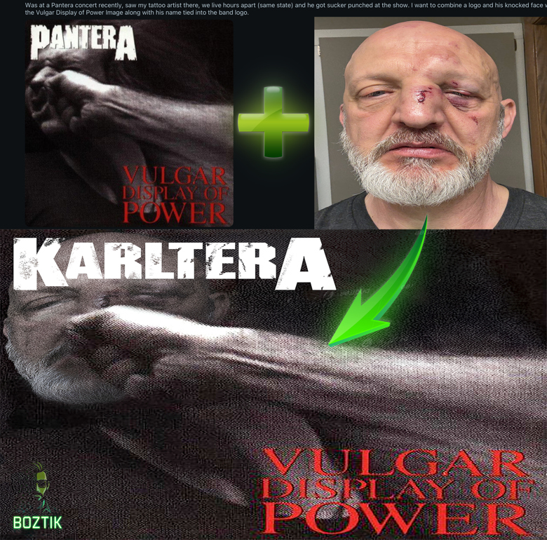
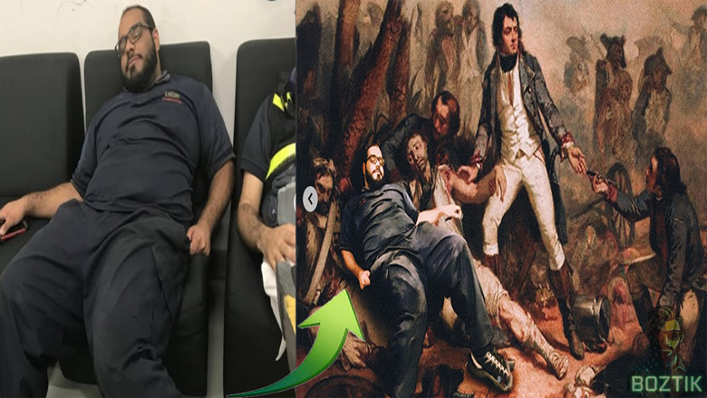

Bringing damaged photographs back to life
A torn, water-damaged print with most of the face missing, restored and colorized into a sharp, natural portrait — the kind of family photo that would otherwise be lost for good.
Every transformation below is real client and personal work — no stock examples. From decades-old damaged photographs to creative composites built from scratch, this is what Boztik does with a photo.
A torn, water-damaged print with most of the face missing, restored and colorized into a sharp, natural portrait — the kind of family photo that would otherwise be lost for good.

An unplanned passerby pulled cleanly out of the background of a cherry-blossom portrait, with lighting and texture matched so the fix is invisible.
A everyday graduation-day photo reworked into a refined, evening-portrait look — new styling and lighting built around the original pose and setting.

An everyday photo reimagined as a glowing fantasy forest — full scene compositing, lighting, and color grading to match the subject seamlessly into a new world.

Model photography combined with product and recipe artwork into a single polished promotional image — built for social and marketing use.

A personal photo, a favorite album cover, and custom typography combined into an original concept piece — designed for a client's tattoo idea, built exactly to brief.

A candid moment dropped into a classical painting for a laugh-out-loud personal gift — proof that not every project has to be serious to be well made.
Restoration, retouching, object removal, or something entirely custom — pricing is fair and flexible, and you decide what the finished work is worth.